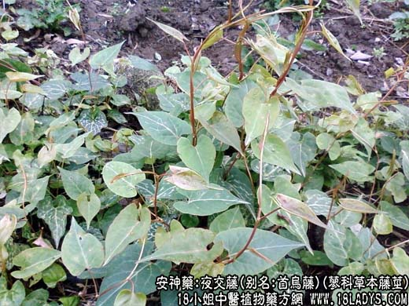

【中药概述】
夜交藤，别名：首乌藤、棋藤，为蓼科草本植物何首乌的藤茎。甘、平。归心、肝经。
1．养心安神：用于阴虚血少所致的虚烦不眠、多梦等，多与合欢皮配伍；因心血不足者，可与酸枣仁，柏子仁，何首乌等配伍；因阴虚阳亢者，可与龙齿、珍珠母等配伍。如（甲乙归藏汤）。
2．祛风通络：用于血虚身痛，全身窜痛等，可配桑寄生，桑枝，独活，羌活，桂枝，当归，红花，附子等。
【药效鉴别】
夜交藤偏于肝肾不足、阴阳失调的失眠。
【药理作用】
具有镇静、泻下作用。
【化学成分】
含蒽醌类，主要为大黄素、大黄酚或大黄素甲醚，均以结合型存在。
【用量用法】
5——10g，水煎服，或入剂。
本文解释权归中药名称大全，本文地址https://www.daquan.com/post/1965.html